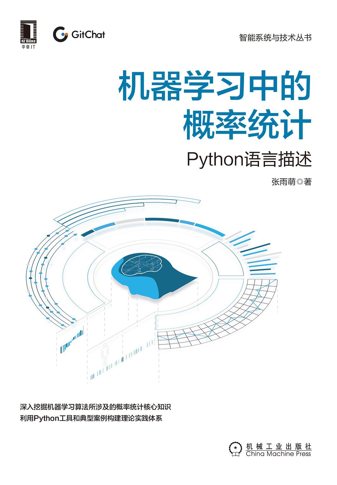

机器学习中的概率统计
更新中。。
概述
本书介绍
读者对象：
想要对机器学习进行深入学习的相关人士；想要对概率统计进一步深入系统地学习的学生和业内人士；金融量化等数据分析行业的从业者；理工科专业高年级本科生和研究生。
本书围绕机器学习算法中涉及的概率统计知识展开介绍，沿着概率思想、变量分布、参数估计、随机过程和统计推断的知识主线进行讲解，结合数学的本质内涵，用浅显易懂的语言讲透深刻的数学思想，帮助读者构建理论体系。同时，作者在讲解的过程中注重应用场景的延伸，并利用Python工具无缝对接工程应用，帮助读者学以致用。
全书共5章。
第1章以条件概率和独立性作为切入点，帮助读者建立认知概率世界的正确视角。
第2章介绍随机变量的基础概念和重要分布类型，并探讨多元随机变量间的重要关系。
第3章介绍极限思维以及蒙特卡罗方法，并重点分析极大似然估计方法以及有偏无偏等重要性质，最后拓展到含有隐变量的参数估计问题，介绍EM算法的原理及其应用。
第4章由静态的随机变量过渡到动态的随机过程，重点介绍马尔可夫过程和隐马尔可夫模型。
第5章聚焦马尔可夫链-蒙特卡罗方法，并列举实例展示Metropolis-Hastings和Gibbs的具体采样过程。
（摘自：机器学习中的概率统计 (豆瓣) (douban.com)）

阅读目的
掌握机器学习数学基础，记录学习难点。
相关资料
《机器学习中的概率统计：Python语言描述》代码： 机器学习中的概率统计-代码.zip
概率思想（第一章）
条件概率、独立性与贝叶斯
本博客所有文章除特别声明外，均采用 CC BY-NC-SA 4.0 许可协议。转载请注明来自 HUII's Blog！
相关推荐


评论